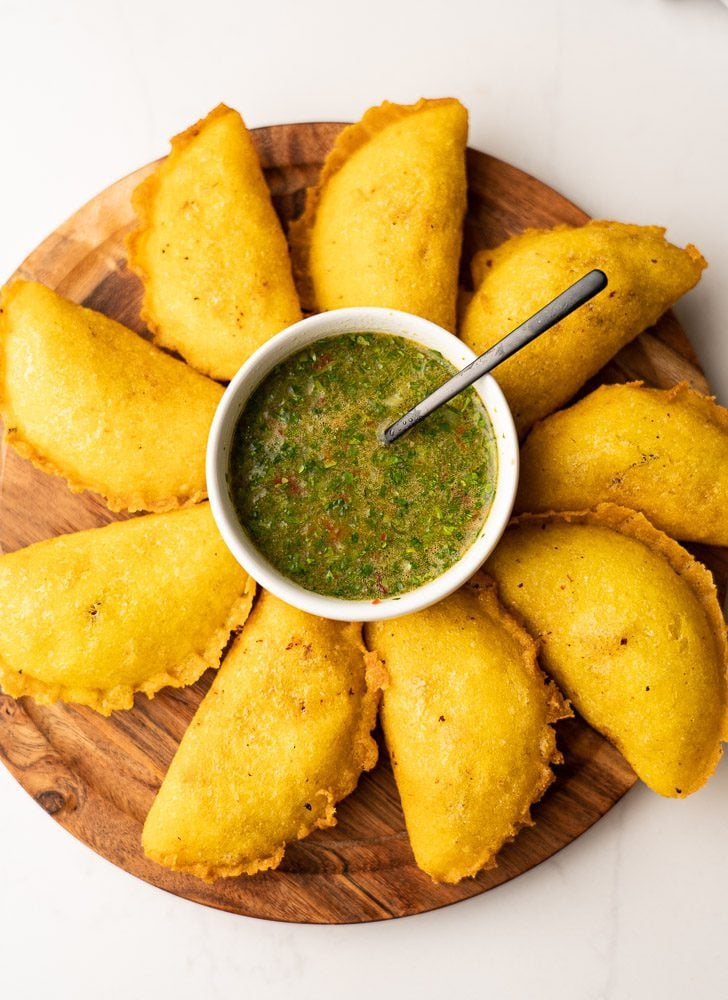

Empanadas

Description
Empanadas are popular in many Latin American and Carribean countries.
While each area has their own unique way of making them, they all share similar ingredients.
The most common type of empanadas are filled with some type of meat or cheese.
Most people fry empanadas, but you can also bake them and use the air fryer. Regardless of what type of empanada you prefer,
chances are you probably can't just eat one. They are a great comfort food and can be served on their own or alongside other dishes. They are also great at parties.
Ingredients
- 2 cups of masa harina
- 1-¼ cups of warm water
- ¼ teaspoon salt
- 2 pieces of round plastic cut out from a bag
- 2 cups of filling cooked chicken, ground meat or grated cheese
- 2 cups of shredded lettuce
- 1 avocado diced
- About 1 ½ cup of vegetable oil for frying
Steps
- Find a local restaurant that makes empanadas so you don't have to make them yourself
- If you do decide to make them yourself, good luck because most online recipes are awful
- Make friends with someone from Panama who makes them from scratch so they can teach you